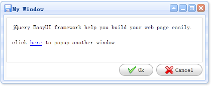

Extend from $.fn.panel.defaults. Override defaults with $.fn.window.defaults.
The window is a floated and draggable panel that can be used as an application window. By default a window can be moved, resized and closed. Its content can also be defined with either as static html or loaded dynamically via ajax.
1. Create window from markup.
2. Create window using javascript.
3. Create window with complext layout.
As usual you can define the window layout. The example below shows how to split window area into two parts: the north and center.
Open and close window.
Load window content via ajax.
The properties extend from panel, below is the overridden and added properties for window.
| Name | Type | Description | Default |
|---|---|---|---|
| title | string | The window title text. | New Window |
| collapsible | boolean | Defines if to show collapsible button. | true |
| minimizable | boolean | Defines if to show minimizable button. | true |
| maximizable | boolean | Defines if to show maximizable button. | true |
| closable | boolean | Defines if to show closable button. | true |
| closed | boolean | Defined if to close the window. | false |
| zIndex | number | Window z-index,increase from it. | 9000 |
| draggable | boolean | Defines if window can be dragged. | true |
| resizable | boolean | Defines if window can be resized. | true |
| shadow | boolean | If set to true,when window show the shadow will show also. | true |
| inline | boolean | Defines how to stay the window, true to stay inside its parent, false to go on top of all elements. | false |
| modal | boolean | Defines if window is a modal window. | true |
The events extend from panel.
The methods extend from panel, below is the added methods for window.
| Name | Parameter | Description |
|---|---|---|
| window | none | Return the outer window object. |